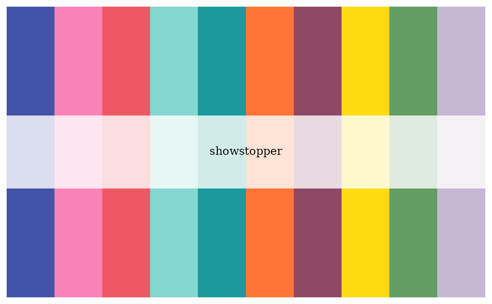
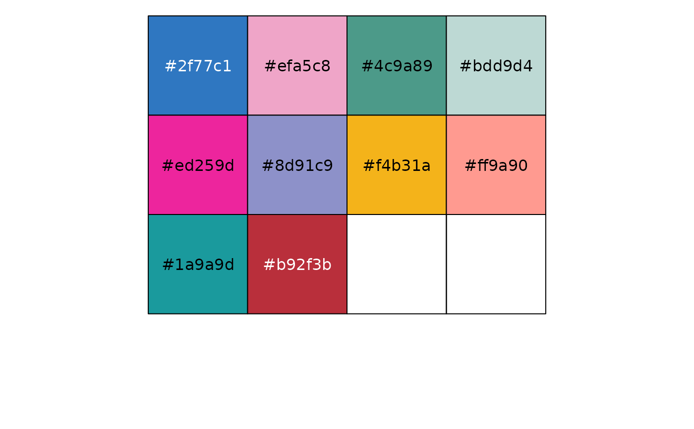
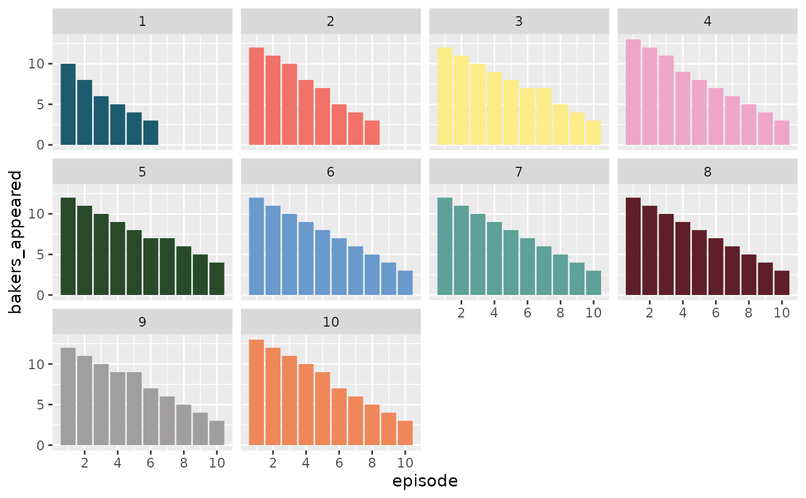
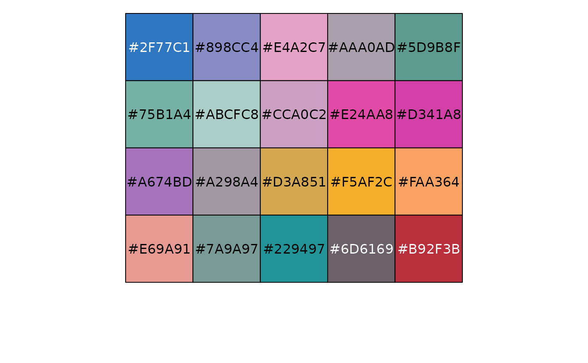

A bakeoff palette generator
Usage
bakeoff_palette(
palette = "showstopper",
n,
direction = 1,
type = c("discrete", "continuous")
)Arguments
- palette
Name of desired palette. Can be either
"showstopper"(the default),"signature", and"finale"(accessible throughbakeoff_palette_names()).- n
Number of colors desired. All palettes have 10 colors, matching the total number of series and maximum number of episodes per series. If omitted, bakeoff uses all colors.
- direction
Either
1or-1. If-1, the palette will be reversed.- type
Either
"continuous"or"discrete". Use continuous if you want to automatically interpolate between colors.
Examples
bakeoff_palette("showstopper")

if (require('scales')) {
show_col(bakeoff_palette("finale"))
}
if (require('ggplot2')) {
line_plot <- ggplot(ratings, aes(x = episode, y = viewers_7day,
color = as.factor(series), group = series)) + facet_wrap(~series) + geom_line(lwd = 2)
line_plot + scale_color_manual(values = bakeoff_palette(), guide = "none")
ggplot(episodes, aes(episode, bakers_appeared, fill = as.factor(series))) +
geom_col() + facet_wrap(~series) +
scale_fill_manual(values = bakeoff_palette("signature"), guide = "none") +
scale_x_continuous(breaks = scales::pretty_breaks())
}
#> Loading required package: ggplot2


# If you need more colors than normally found in a palette, you
# can use a continuous palette to interpolate between existing
# colours
pal <- bakeoff_palette(palette = "finale", n = 20, type = "continuous")
if (require('scales')) {
show_col(pal)
}
